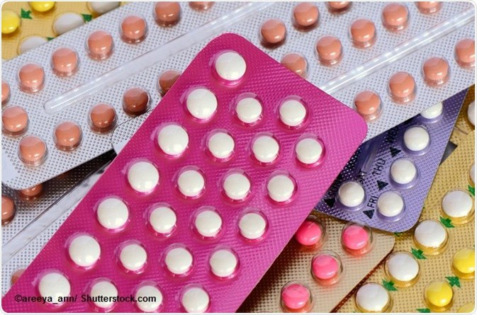
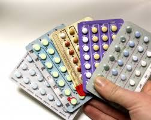

The injectable contraceptive method is a type of birth control that involves receiving hormone injections to prevent pregnancy.
This method is also known as the birth control shot.
...

Advantages of the injectable contraceptive method include:
It is highly effective, with a failure rate of less than 1%.
It does not require daily attention or remembering to take a pill.
It can reduce menstrual cramps and heavy periods.

Disadvantages of the injectable contraceptive method include:
It is not immediately reversible, and the effects can last for several months after the last injection.
It can cause side effects like weight gain, mood changes, and irregular periods.
It does not protect against sexually transmitted infections (STIs).
It is important to note that the injectable contraceptive method does not protect against sexually transmitted infections (STIs).
Therefore, it is recommended to use a condom or other barrier method in addition to the injection for STI protection.
It is also advised to speak to a healthcare provider before starting any birth control method to discuss the best option for individual needs and health considerations.
If you have any further questions, feel free to ask!
Our professionals are ready to help you